Häufige Probleme und Mythen
Deine Katze will dir mit ihrem Verhalten nicht absichtlich das Leben schwer machen. Wenn sie das Katzenklo verfehlt, sich versteckt, beim Streicheln zwickt oder nachts durch die Wohnung tobt, hilft es, dir zuerst eine Frage zu stellen: „Was will die Katze mit diesem Verhalten erreichen – oder wovor will sie damit entkommen?“ Sehr oft steckt hinter „seltsamem“ Verhalten ein ganz nachvollziehbares Bedürfnis: Sicherheit, Kontrolle, ein Fluchtweg, Spiel, Jagd, ungestörtes Fressen oder ein bequemes Katzenklo.
1. Die Katze verfehlt das Katzenklo nicht aus Trotz
Wenn deine Katze plötzlich anfängt, außerhalb des Katzenklos zu urinieren oder Kot abzusetzen, ist das kein Racheakt gegen dich. Ein solches Verhalten zeigt meist, dass mit der Katze selbst oder ihren Lebensbedingungen etwas nicht stimmt.
Die Ursache kann Schmerz, eine Erkrankung der Harnwege, Stress, ein unbequemes Katzenklo, ungeeignete Streu oder ein Konflikt mit einer anderen Katze sein. Manchmal wählt die Katze einen anderen Ort auch einfach, weil sie sich dort ruhiger fühlt.
Was kannst du tun? Ist das Verhalten plötzlich aufgetreten, solltest du zuerst einen Tierarzt aufsuchen, um eine medizinische Ursache auszuschließen. Prüfe danach das Katzenklo selbst: Ist es groß genug, sauber, gut platziert, und kann die Katze es ungestört nutzen, ohne anderen Tieren zu begegnen?
Wichtig: Schimpfe nicht mit der Katze und drücke ihr nicht die Nase in die Pfütze. Das erklärt ihr nicht, was du von ihr willst, und zusätzlicher Stress verschlimmert das Problem eher. Erkläre es der Katze auf eine Art, die sie wirklich versteht – mit Geduld statt mit Strafe.
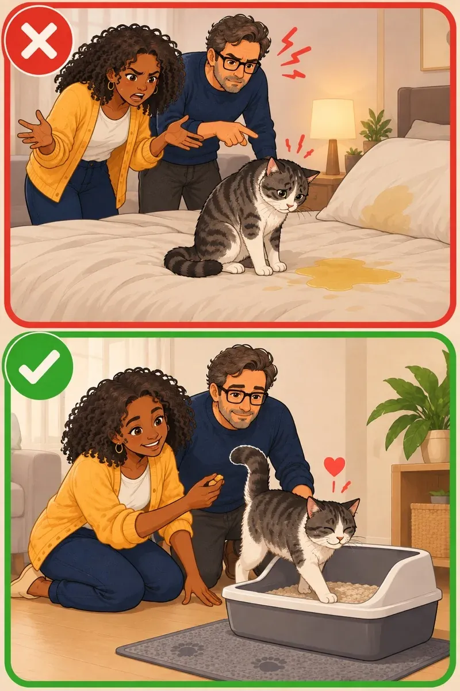
2. Die Katze holt das Futter aus dem Napf
Katzen reagieren tatsächlich sehr empfindlich auf Berührungen ihrer Schnurrhaare. Deshalb bevorzugen manche Tiere breite, flache Näpfe.
Die populäre Erklärung von der „Schnurrhaarermüdung“ ist bisher aber nicht ausreichend wissenschaftlich belegt. In einer Studie an Katzen fanden sich keine überzeugenden Hinweise darauf, dass ein gewöhnlicher tiefer Napf ihnen deutliches Unbehagen bereitet. Ein Teil der Tiere bevorzugte trotzdem einen speziellen breiten Napf.
Am einfachsten orientierst du dich hier also an deiner eigenen Katze. Holt sie das Futter ständig auf den Boden, frisst sie nur vom Rand des Napfs oder bevorzugt sie eindeutig einen flachen Teller, probiere einen breiten, flachen Napf aus. Das ist ein günstiges Experiment, das die Fütterung angenehmer machen kann.
Noch ein Punkt: Der Napf sollte standfest und leicht zu reinigen sein. Manche Katzen fressen außerdem lieber an einem ruhigen Ort, an dem sie niemand stört.
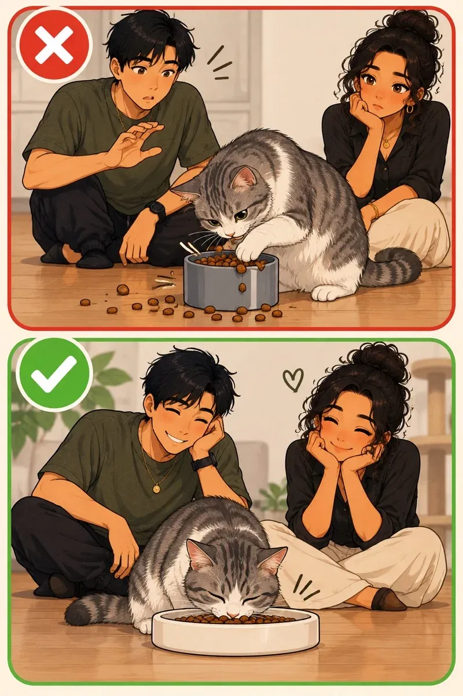
3. Du hast das Sofa umgestellt – und die Katze wird nervös
Für einen Menschen ist das Umstellen von Möbeln einfach eine Veränderung der Einrichtung. Für eine Katze besteht die Wohnung aus vertrauten Wegen, Gerüchen, Ruheplätzen und sicheren Punkten.
Größere Veränderungen können deshalb tatsächlich Stress auslösen – besonders wenn sich gleichzeitig der Platz des Katzenklos, des Futternapfs oder des Schlafplatzes ändert oder ein Lieblingsversteck verschwindet.
Das heißt nicht, dass du das Sofa nie umstellen darfst. Katzen können sich durchaus an Veränderungen gewöhnen. Ist deine Katze eher ängstlich, ist es aber besser, nicht alles auf einmal zu ändern und ihr Zeit zu geben, sich an die Neuerungen zu gewöhnen.
Lass beim Umräumen ein paar vertraute Dinge an ihrem Platz: das Lieblingsbett, das Versteck, den Kratzbaum und den Zugang zu gewohnten Ressourcen. Gib der Katze danach die Möglichkeit, den neuen Raum selbst in ihrem eigenen Tempo zu erkunden.
Besonders wichtig ist, dass sie einen Ort hat, an den sie sich zurückziehen kann und wo sie niemand stört.
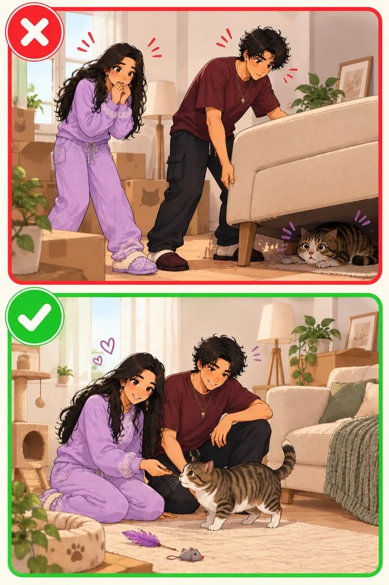
4. Die Katze entzieht sich der Umarmung nicht, weil sie dich nicht liebt
Viele Katzen sind gerne in der Nähe ihres Menschen, mögen es aber nicht, festgehalten oder gegen ihren Willen lange gestreichelt zu werden.
Wendet sich die Katze ab, verspannt sich, bewegt den Schwanz, legt die Ohren an oder putzt sich nach dem Streicheln plötzlich heftig, kann das ein Signal sein: „Mir reicht’s jetzt.“
Die Katze sollte immer die Möglichkeit haben, den Kontakt zu beenden. Verhaltensstudien zeigen, dass Interaktionen entspannter verlaufen, wenn dem Tier eine Wahl gelassen wird und man es nicht zum Weitermachen zwingt.
Probiere eine einfache Regel: Streichle ein paar Sekunden, halte dann inne und beobachte die Reaktion. Drängt sich die Katze von selbst wieder an deine Hand, kannst du weitermachen. Zieht sie sich zurück, lass sie in Ruhe.
So lernt die Katze mit der Zeit, dass sie sich bei dir nicht wehren oder unangenehme Berührungen aushalten muss. Beim Aufbau von Vertrauen kann ein Lieblingsleckerli direkt nach dem Kontakt helfen – so verknüpft die Katze die Nähe zum Menschen mit etwas Angenehmem und Sicherem.
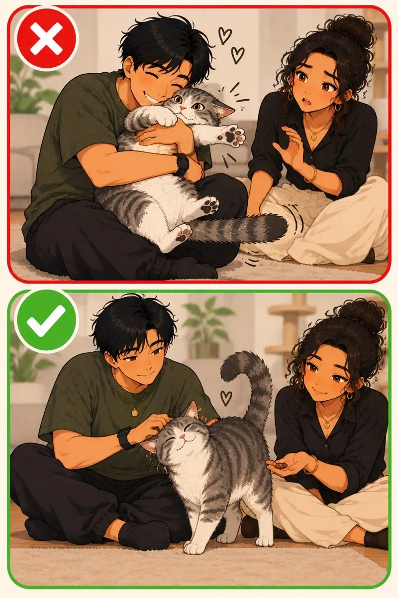
5. Die Katze schläft den ganzen Tag und tobt nachts durch die Wohnung
Katzen sind keine strikt nachtaktiven Tiere. Ihre natürliche Aktivität steigt meist in der Dämmerung, also am frühen Morgen und am Abend. Dass eine Katze tagsüber schläft und abends durch die Wohnung flitzt, ist also erst einmal völlig normal.
Zum Problem wird es, wenn das Tier tagsüber kaum Gelegenheit hat, zu spielen, die Umgebung zu erkunden und seinem natürlichen Beuteverhalten nachzugehen. Eine Wohnungskatze braucht mehr als nur „auf dem Sofa liegen“ – sie braucht Beschäftigung, die ihrem natürlichen Verhalten entspricht: anschleichen, jagen, Futter suchen und erbeuten.
Was kannst du tun? Steh nicht jedes Mal auf, um mit der Katze zu reden, sie zu füttern oder um 4 Uhr morgens mit ihr zu spielen. Endet jeder nächtliche Ausbruch mit Aufmerksamkeit oder Futter, kann sich das Verhalten festigen: Die Katze merkt, dass nächtliche Aktivität tatsächlich dazu führt, dass du aufstehst.
Besser ist es, die Aktivität auf den Abend zu verlegen. Ein paar Stunden vor dem Schlafengehen kannst du mit der Katze aktiv mit einer Angel oder einem anderen Spielzeug spielen, das sie jagen kann, und ihr danach die gewohnte Futterportion geben. Tagsüber helfen außerdem Möglichkeiten zur eigenständigen Beschäftigung: ein Kratzbaum, ein erhöhter Beobachtungsplatz, Spielzeug und Futter-Rätsel.
Du solltest die Katze aber nicht absichtlich vom Schlafen abhalten, damit sie „müde genug für die Nacht“ ist – Katzen schlafen normalerweise viele Stunden am Tag, und der Schlaf selbst ist kein Problem.
Noch ein wichtiger Punkt: Treten nächtliches Schreien oder Unruhe plötzlich auf, besonders bei einer erwachsenen oder älteren Katze, solltest du das nicht einfach auf den Charakter schieben – eine Verhaltensänderung kann auch mit Schmerzen oder einer Erkrankung zusammenhängen und sollte tierärztlich abgeklärt werden.
Die wichtigste Aufgabe ist also nicht, den nächtlichen Ausbruch zu „verbieten“, sondern dafür zu sorgen, dass die Katze tagsüber und abends genug passende Beschäftigung hat – und dass nächtliches Toben nicht zum Mittel wird, um Aufmerksamkeit zu bekommen.
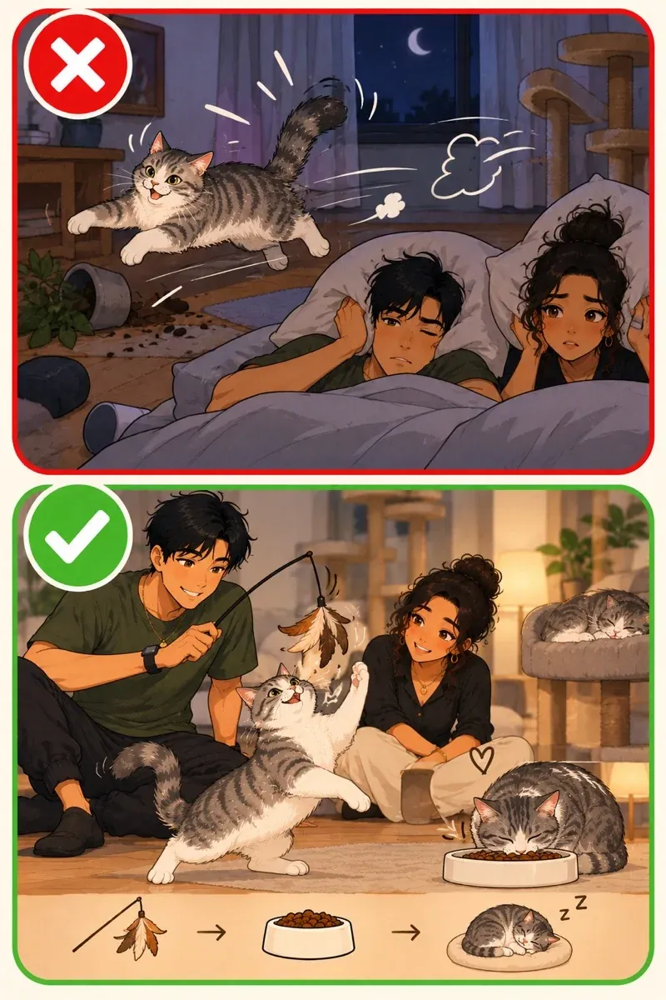
6. Eine Katze braucht kein stressfreies Leben, sondern die Möglichkeit, sich vor Stress zurückzuziehen
Stress lässt sich aus dem Leben einer Wohnungskatze nicht vollständig entfernen: Es wird Besuch geben, den Staubsauger, Renovierungen, laute Geräusche, die Transportbox und Tierarztbesuche.
Deine Aufgabe ist nicht, die Wohnung absolut ruhig und unveränderlich zu halten. Viel wichtiger ist es, der Katze die Kontrolle über die Situation zu geben. Hat sie Angst, sollte sie sich zurückziehen, verstecken oder nach oben flüchten können – Studien zeigen, dass ein Rückzugsort Anzeichen von Stress bei Katzen tatsächlich verringern kann.
Richte deshalb in der Wohnung mehrere sichere Rückzugsorte ein. Das kann ein Kuschelhäuschen, ein Karton, ein Regal, die obere Etage eines Kratzbaums oder einfach eine ruhige Ecke sein.
Die wichtigste Regel: Hat sich die Katze dorthin zurückgezogen, sollte man sie nicht herausholen, nur um mit ihr zu kuscheln.
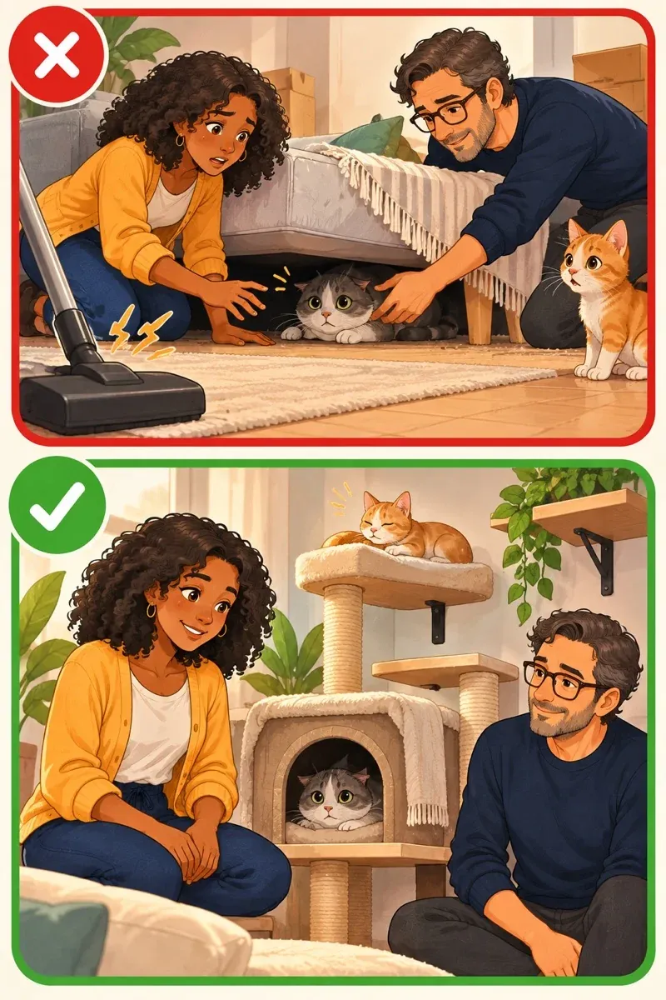
7. Wie gewöhnst du eine Katze an das Katzenklo?
Bei Kätzchen ist es eigentlich treffender, nicht vom „Beibringen“ des Katzenklos zu sprechen, sondern davon, Bedingungen zu schaffen, unter denen das Katzenklo einfach der bequemste Ort zum Lösen wird – und genau dieselben Prinzipien gelten auch für erwachsene Katzen.
Katzen wählen ihren Toilettenplatz von Natur aus selbst, aber diese Wahl wird stark durch den Standort des Katzenklos, seine Größe, Sauberkeit, die Streu und das Sicherheitsgefühl beeinflusst.
Beginne beim Katzenklo selbst. Es sollte groß genug sein, damit die Katze problemlos umdrehen und darin scharren kann – das ist ihr wirklich wichtig. Tierärzte orientieren sich oft an der Faustregel: Die Länge des Klos sollte etwa das 1,5-Fache der Körperlänge der Katze von der Nase bis zur Schwanzspitze betragen. Der Einstiegsrand sollte besonders bei einem Kätzchen nicht zu hoch sein.
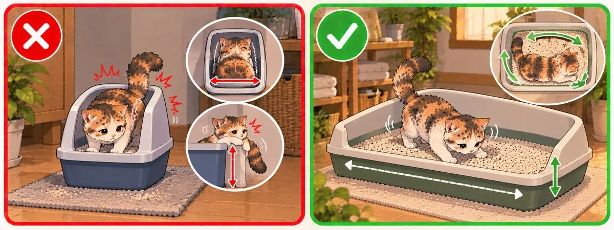
Stelle das Katzenklo an einen ruhigen Ort, den die Katze leicht erreichen kann – nicht neben die Näpfe und nicht dorthin, wo sie ständig durch Lärm, Menschen oder andere Tiere erschreckt wird.
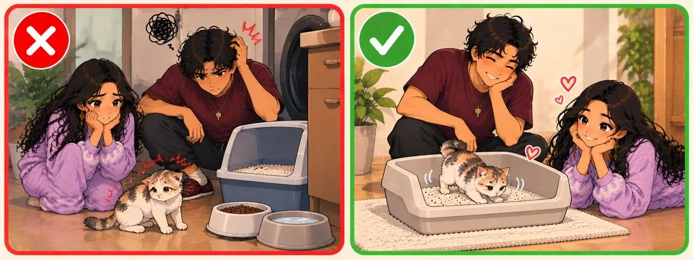
Lebst du mit mehreren Katzen zusammen, reicht ein einzelnes Klo oft nicht aus. Eine verbreitete Empfehlung lautet: so viele Katzenklos wie Katzen, plus eins zusätzlich. Verteile sie am besten auf verschiedene zugängliche Orte, statt sie alle nebeneinanderzustellen.
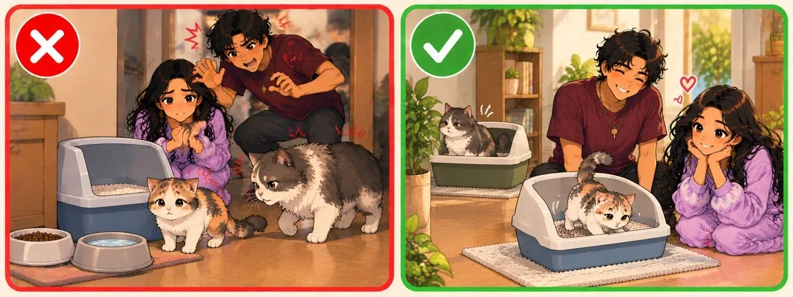
Sauberkeit ist sehr wichtig. Entferne Klumpen und Verschmutzungen regelmäßig und reinige das Klo selbst von Zeit zu Zeit gründlich. Verzichte dabei auf stark duftende Reinigungsmittel: Ein Geruch, der Menschen angenehm erscheint, kann für die Katze unangenehm sein.
Ist ein Kätzchen gerade erst eingezogen, kannst du es ein paar Mal nach dem Schlafen, Fressen oder aktivem Spielen behutsam zum Katzenklo bringen. Halte es aber nicht darin fest und schimpfe schon gar nicht mit ihm.
Eine Katze sollte grundsätzlich nie für ein „falsches“ Geschäft bestraft werden. So entstehen keine positiven Assoziationen mit dem Ort, sondern nur Stress.
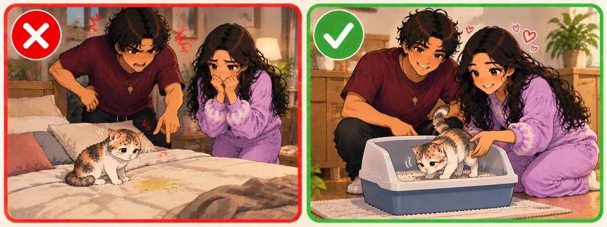
Hat die Katze woanders hin gemacht, ist es wichtig, den Geruch gründlich zu entfernen – sonst bleibt dieser Ort als Toilette attraktiv. Stelle bei Bedarf vorübergehend ein zusätzliches Klo dorthin und verschiebe es dann Schritt für Schritt an den gewünschten Platz.
Und das Wichtigste: Wenn eine erwachsene Katze, die das Klo bisher normal genutzt hat, plötzlich daneben geht, ist das keine Frage der „Gewöhnung“ mehr. Zuerst muss die Ursache gefunden werden – infrage kommen eine Erkrankung der Harnwege, Schmerzen, Darmprobleme, Stress, ein Konflikt mit einer anderen Katze oder ein unbequemes Klo. Solche Fälle solltest du systematisch angehen, angefangen mit einem Tierarztbesuch.
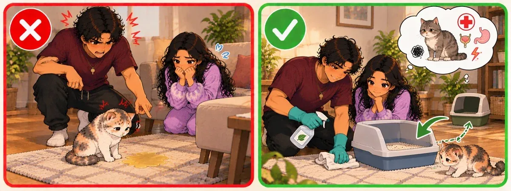
Die Regel ist einfach: Für ein Kätzchen braucht es ein bequemes Klo und eine entspannte Eingewöhnung, für eine erwachsene Katze, die plötzlich damit aufgehört hat, zuerst eine gesundheitliche Abklärung. Dieser Ansatz ist deutlich wirksamer, als der Katze „erklären“ zu wollen, wo sie ihr Geschäft machen darf.
8. Wie du ein Kätzchen an das Katzenklo gewöhnst
1. Bereite zuerst das richtige Katzenklo vor. Es sollte groß genug sein, damit das Kätzchen problemlos umdrehen und darin scharren kann. Für ein kleines Kätzchen eignet sich am besten ein niedriges Klo, in das es leicht hineinklettern kann – ein geschlossenes Klo ist am Anfang nicht nötig, ein offenes ist zum Kennenlernen meist einfacher. Verwende am besten unparfümierte Streu; ist das Kätzchen bereits an eine bestimmte Streu gewöhnt (zum Beispiel Mineral- oder Holzstreu), solltest du zunächst dabei bleiben und erst später auf eine andere umsteigen. Bedenke, dass Kätzchen kleine Pfötchen haben und bequem auf der Streu laufen können sollten – große und scharfkantige Körner können die weichen Ballen verletzen.
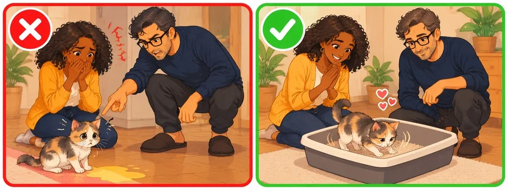
2. Stelle das Klo an einen ruhigen Ort. Das Kätzchen sollte es leicht finden und jederzeit Zugang dazu haben. Stelle es nicht neben die Futter- und Wassernäpfe, nicht neben die Waschmaschine und nicht dorthin, wo ständig Menschen vorbeilaufen. Ist die Wohnung groß, kannst du anfangs mehrere Klos an verschiedenen Stellen aufstellen.
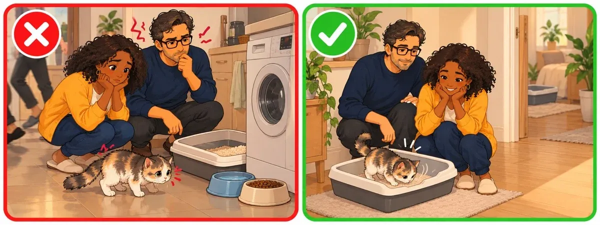
3. Zeig ihm das Klo nach dem Schlafen und Fressen. Das sind die günstigsten Momente zum Lernen. Bring das Kätzchen ruhig zum Klo, nachdem es aufgewacht ist, gefressen oder aktiv gespielt hat. Du kannst es hineinsetzen und selbst alles erkunden lassen. Bewege dabei nicht seine Pfoten durch die Streu, um das „Zuscharren“ vorzumachen – das Kätzchen soll selbst begreifen, dass dieser Ort für die Toilette gedacht ist. Lebt bereits eine andere Katze im Haushalt, dient deren Geruch dem Kätzchen als hilfreiche Orientierung.
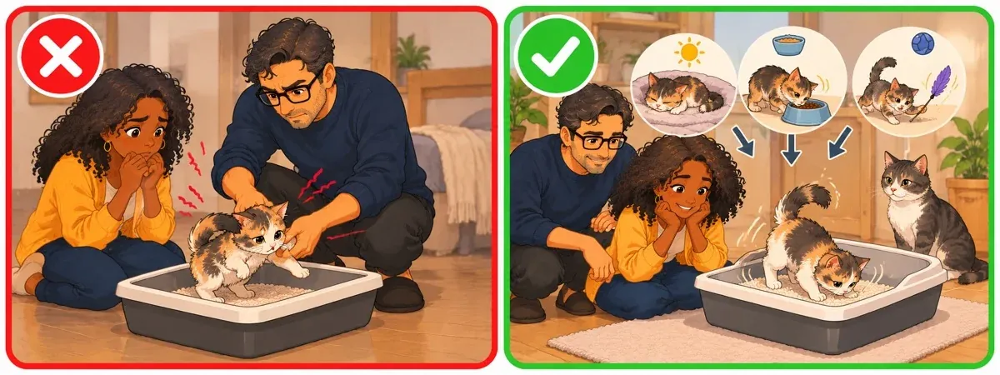
4. Achte auf die Signale. Schnüffelt das Kätzchen am Boden, dreht sich im Kreis, sucht eine Ecke, geht in die Hocke oder scharrt mit den Pfoten auf dem Boden, trag es ruhig zum Klo. Nutzt es das Klo, störe es nicht dabei und greif nicht sofort danach zu; du kannst es ruhig loben und ihm zur Bestärkung ein Leckerli geben.
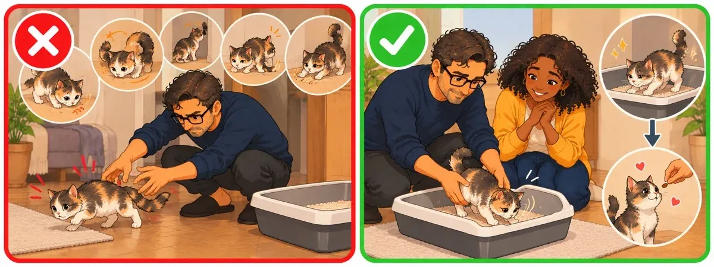
5. Schränke in den ersten Tagen den Raum ein. Ist das Kätzchen gerade erst eingezogen, musst du ihm nicht sofort die ganze Wohnung überlassen. Beginne mit einem ruhigen Zimmer, in dem sich Klo, Wasser, Futter, Schlafplatz, Versteck und Spielzeug befinden. Nutzt das Kätzchen das Klo zuverlässig, öffne nach und nach die übrigen Räume – so prägt es sich die Lage des Klos leichter ein.
6. Reinige das Klo regelmäßig. Katzen meiden ein schmutziges Klo. Entferne Urin und Kot regelmäßig und wasche das Klo selbst ohne aggressive oder stark duftende Reinigungsmittel. Du musst die Streu nicht nach jeder einzelnen Benutzung komplett wechseln – wie oft nötig ist, hängt von der Art der Streu ab.
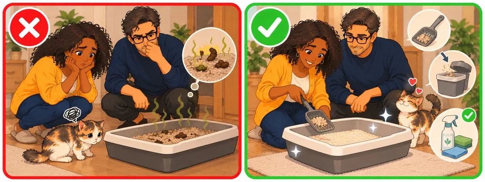
7. Ist es danebengegangen, schimpf nicht. Das ist sehr wichtig: nicht anschreien, nicht mit der Nase hineindrücken und nicht bestrafen. Das Kätzchen versteht die Strafe nicht als Erklärung der Regeln, sondern könnte anfangen, dich oder das Toilettengehen selbst zu fürchten. Reinige die Stelle ruhig und entferne den Geruch gründlich mit speziellen Reinigern für Tierflecken. Wählt das Kätzchen immer wieder dieselbe Ecke, stelle das Klo vorübergehend genau dorthin – sobald es das Klo nutzt, kannst du es Schritt für Schritt an den gewünschten Platz verschieben, meist folgt die Katze dabei ihrem Klo.
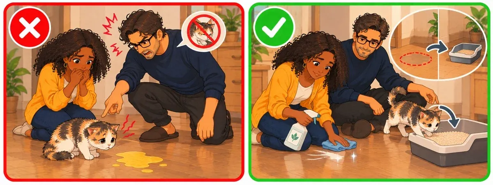
8. Wiederholen sich die Missgeschicke, such nach der Ursache. Das bedeutet nicht zwangsläufig, dass das Kätzchen „nicht verstanden“ hat. Möglich wäre: Das Klo ist zu klein; der Rand ist zu hoch; die Streu gefällt ihm nicht; das Klo steht an einem lauten Ort; eine andere Katze versperrt den Zugang; das Klo ist nicht sauber genug; der Weg dorthin ist zu unbequem; oder es braucht ein geschlossenes Klo mit Tür. Uriniert das Kätzchen häufig in kleinen Mengen, presst es sich an, miaut es beim Urinieren, erscheint Blut im Urin, oder hört es plötzlich auf, das Klo zu benutzen, dann ist ein Tierarztbesuch nötig.
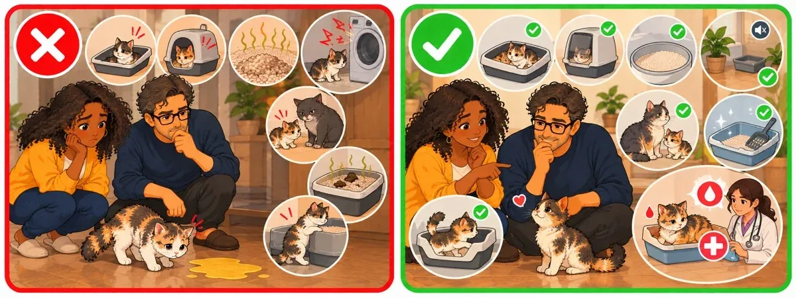
Einfaches Schema für die ersten Tage: aufgewacht → Klo; gefressen → Klo; gespielt → Klo; sucht einen Platz oder geht in die Hocke → ruhig zum Klo tragen; richtig gemacht → loben; daneben gegangen → ohne Strafe den Geruch entfernen und die Ursache klären.
Und vor allem: Ein Kätzchen muss nicht zur Nutzung des Klos „gezwungen“ werden. Mach das Klo einfach zum verständlichsten, zugänglichsten und bequemsten Ort für die Toilette – meist funktioniert genau das am besten.
9. Woran du erkennst, dass Katzen nicht nur spielen, sondern wirklich kämpfen
Wenn zwei Katzen zusammenleben, jagen sie sich manchmal hinterher, packen sich mit den Pfoten und beißen sogar. Von außen ist oft schwer zu sagen: Spielen sie gerade oder gibt es wirklich einen Konflikt?
Entscheidend ist, nicht auf einen einzelnen Moment zu achten, sondern darauf, wie sich die Katzen vor, während und nach dem Kontakt verhalten.
Wenn du eine kurze Antwort möchtest: Wenn du nicht erkennen kannst, ob die Katzen spielen oder ernsthaft kämpfen, ist es höchstwahrscheinlich nur Spiel. Einen echten Kampf sieht man sofort.
Wann es nach Spiel aussieht
Beim Spielen tauschen Katzen meist immer wieder die Rollen. Eine jagt die andere und rennt wenige Sekunden später selbst davon. Zwischen den Runden können sie in Ruhe auseinandergehen, sich mit anderem beschäftigen und dann wieder von vorn beginnen.
Auch ein ziemlich lautes Gerangel bedeutet nicht unbedingt Aggression.
Wann es nach Konflikt aussieht
Aufmerksam solltest du werden, wenn eine Katze die andere ständig verfolgt, während die zweite immer wieder flieht und sich zu verstecken versucht. Besonders, wenn dazu Fauchen, Knurren, lautes Schreien, angelegte Ohren, ein angespannter Körper, aufgestelltes Fell und heftige Pfotenhiebe kommen.
Eine gute Faustregel: Wenn eine Katze den Kontakt deutlich beenden will und die andere sie nicht gehen lässt, ist das kein harmloses Spiel mehr.
Was du als Halter tun solltest
Überlass die Katzen nicht sich selbst, damit sie das „unter sich klären“, wenn sich die Konflikte wiederholen. Und versuche auf keinen Fall, sie mit den Händen zu trennen — in so einem Moment kann die Katze dich versehentlich beißen oder kratzen.
Besser ist es, die Tiere ruhig zu trennen, ihnen Zeit zum Beruhigen zu geben und getrennte Bereiche anzubieten.
Prüfe, ob es im Haushalt genug Ressourcen gibt: Katzentoiletten, Näpfe, Liegeplätze, Verstecke und Rückzugsorte. Manchmal beginnt ein Konflikt nicht, weil sich die Katzen „nicht mögen“, sondern weil sich eine von ihnen ständig von der anderen unter Druck gesetzt fühlt.
Wenn die Probleme immer wieder auftreten, ist ein Tierverhaltensberater eine ausgezeichnete Lösung. Denk daran: Katzen denken nicht wie Menschen und sehen die Welt anders als wir.
Was der Katze wichtig ist
Für eine Katze ist es sehr wichtig, den Kontakt ablehnen zu können. Sie sollte wissen, dass sie weggehen, sich verstecken, in Ruhe fressen oder die Toilette benutzen kann, ohne dort der anderen Katze zu begegnen. Manchmal hilft es, die Katzen auf getrennte Zimmer aufzuteilen, in denen es jeweils Futter, Wasser und eine Toilette gibt.
Ja, Katzentoiletten können manchmal in verschiedenen Räumen stehen. Der Autor des Projekts hat eine geschlossene Katzentoilette im Bad, im Flur und im Schlafzimmer. Alles für den Komfort der Katzen — und es hilft wirklich.
Wenn sich eine Katze regelmäßig versteckt, nicht mehr spielt, schlechter frisst oder ständig angespannt ist, ist das ein Grund, genauer hinzuschauen und bei Bedarf eine Tierärztin, einen Tierarzt oder eine Fachperson für Katzenverhalten aufzusuchen.
10. So wählst du einen guten Katzensitter aus
Ein Katzensitter ist nicht einfach jemand, der in die Wohnung kommt und Futter hinstellt. Während deiner Abwesenheit ist er praktisch der Mensch, der für das gewohnte Leben deiner Katze verantwortlich ist.
Deshalb wählst du ihn besser rechtzeitig aus und nicht erst am letzten Tag vor der Reise. Wichtig ist außerdem, dass du der Person vertrauen kannst und ihre Kontaktdaten hast (am besten auch die Angaben aus ihren amtlichen Ausweisdokumenten).
Lass die beiden sich zuerst kennenlernen
Bitte den Sitter, schon vor deiner Abreise vorbeizukommen. Zeig ihm die Wohnung und erzähl, wie ein normaler Tag deiner Katze abläuft.
Achte nicht nur darauf, ob dir die Person sympathisch ist. Wichtig ist auch die Reaktion der Katze selbst. Manche kommen sofort zur Begrüßung, andere beobachten lieber aus der Ferne. Zwing sie nicht zum Kontakt.
Ein guter Sitter versucht nicht, sich um jeden Preis sofort mit der Katze anzufreunden. Er kann ruhig in der Nähe sein und ihre Grenzen respektieren.
Was du unbedingt erzählen solltest
Hinterlasse eine einfache, verständliche Anleitung:
- wann und wie viel gefüttert wird;
- wo das Wasser steht;
- wie oft die Katzentoilette gereinigt wird;
- ob die Katze gern spielt und womit;
- ob man sie auf den Arm nehmen darf;
- wo sie sich meist versteckt oder schläft;
- welche Besonderheiten sie im Verhalten hat;
- ob sie Medikamente bekommt.
Hinterlasse außerdem Telefonnummer und Adresse einer Tierklinik sowie deinen eigenen Kontakt für den Fall, dass der Katze etwas passiert. Alles, was die Katze für einen Tierarztbesuch braucht, bereitest du am besten im Voraus vor.
Worum du den Sitter bei den Besuchen bitten solltest
Gut ist es, wenn der Sitter bei jedem Besuch nicht nur Futter hinstellt, sondern wirklich nach dem Zustand der Katze schaut.
Er soll prüfen, ob sie gefressen hat, ob frisches Wasser da ist, ob sie die Toilette benutzt und ob sie wie gewohnt aussieht. Wenn die Katze plötzlich ungewöhnlich schlapp ist, sich versteckt, das Futter verweigert oder sich ganz anders verhält als sonst, ist es wichtig, dass er dir das mitteilt.
Eine gute Praxis ist, nach jedem Besuch ein kurzes Foto oder Video zu vereinbaren. So weißt du, wie deine Katze die Zeit ohne dich verbringt (und kannst dich einfach über den Anblick deines geliebten Tieres freuen).
Oder du installierst Kameras, um die Katze per Smartphone zu beobachten.
Mit Katzen zu spielen ist wichtig. Und wenn deine Katze gut mit dem Sitter auskommt, bittest du ihn am besten, sich bei jedem Besuch mit ihr zu beschäftigen.
Der Sitter kann einmal am Tag kommen, mehrmals täglich oder während deiner Abwesenheit richtig bei dir wohnen. Das hängt ganz von deinen Möglichkeiten und den Bedürfnissen der Katze ab.
Denk daran: Eine Katze darf nicht lange allein gelassen werden. Bei jedem Besuch sollte es Kontakt zu einem Menschen geben: Gespräch (damit das Tier eine menschliche Stimme hört), Spiel, Streicheln oder auch mal ein Schläfchen auf dem Schoß des Gastes (manchmal braucht das eine Katze, die allein ist).
Sicherheit zu Hause
Räume vor der Abreise Medikamente, Haushaltschemikalien, gefährliche Gegenstände und alles weg, was die Katze versehentlich verschlucken könnte, während sie ohne Menschen zu Hause ist.
Zeig, wo die Transportbox steht, und erkläre vorab, was zu tun ist, wenn die Katze tierärztliche Hilfe braucht.
Prüfe Fenster und Balkon gesondert. Wer ein- oder zweimal am Tag in die Wohnung kommt, lässt versehentlich offen, was du normalerweise geschlossen hältst.
Was der Katze wichtig ist
Für die meisten Katzen ist es am angenehmsten, wenn der gewohnte Tagesablauf erhalten bleibt: dasselbe Futter, ungefähr dieselben Fütterungszeiten, vertraute Orte und möglichst wenige unnötige Veränderungen.
Deine Aufgabe ist nicht nur, jemanden zu finden, der die Katze füttert. Du musst jemanden finden, bei dem sich die Katze während deiner Abwesenheit so sicher wie möglich fühlt.
11. Wenn du eine Katze aus dem Tierheim holst
Der Umzug aus dem Tierheim in ein neues Zuhause ist für eine Katze ein großes Ereignis. Auch wenn sie im Tierheim freundlich war und ruhig auf den Arm kam, kann sich ihr Verhalten zu Hause völlig verändern.
Sie versteckt sich vielleicht unter dem Bett, kommt nicht zu dir, frisst wenig oder zeigt gar kein Interesse an Spielzeug. Manchmal ist es umgekehrt: Die Katze läuft dem Menschen ständig hinterher und fordert Aufmerksamkeit.
Das heißt nicht, dass du etwas falsch machst. Sie braucht einfach Zeit, um zu verstehen, was jetzt passiert. Wichtig ist, der Katze Zeit und die Möglichkeit zu geben, sich selbst einzugewöhnen, indem du einen sicheren und überschaubaren Raum schaffst.
Womit man anfängt
Bereite vor der Ankunft der Katze einen kleinen ruhigen Bereich vor. Dort sollten Wasser, Futter, Katzentoilette, ein Schlafplatz und ein Versteck sein.
Es ist nicht nötig, ihr sofort die ganze Wohnung zu öffnen. Für eine neue Katze kann ein großes, unbekanntes Revier zu viel sein. Ein kleiner, sicherer Raum hilft ihr, sich nach und nach an Gerüche, Geräusche und den neuen Tagesablauf zu gewöhnen.
Wenn du die Katze nach Hause bringst, zieh sie nicht aus der Transportbox. Öffne die Tür und lass sie von selbst herauskommen.
Dräng das Kennenlernen nicht
Man möchte die neue Katze am liebsten sofort streicheln, auf den Arm nehmen und der ganzen Familie zeigen. Besser wartest du aber etwas. Denk daran: Der Mensch versteht, was geschieht, die Katze nicht.
Setz dich in die Nähe, sprich ruhig und lass die Katze selbst entscheiden, wann sie bereit ist, näher zu kommen.
Wenn sie sich versteckt hat, ist das normal. Schau nicht ständig unters Bett und zieh sie nicht hervor. Jede Katze reagiert anders: Die eine kommt sofort, die andere bleibt vielleicht einen oder zwei Tage versteckt.
Für die Katze ist wichtig zu spüren, dass sie den Abstand zwischen sich und dem Menschen selbst bestimmt.
Wenn schon eine andere Katze im Haus lebt
Lass die Neue nicht einfach in den gemeinsamen Raum und erwarte nicht, dass sie sich sofort anfreunden.
Zunächst hältst du die Tiere besser getrennt. Sie können sich nach und nach über Gerüche und Geräusche aneinander gewöhnen und erst dann zum direkten Kennenlernen übergehen.
So haben beide Katzen weniger Stress und mehr Gelegenheit, sich in Ruhe an die neue Situation zu gewöhnen.
Mehr dazu findest du im Abschnitt der App „Zwei Katzen in einer Wohnung zusammenführen“.
Worauf man achten sollte
Achte in den ersten Tagen auf Appetit, Wasser, Toilette und das allgemeine Verhalten.
Sich zu verstecken und vorsichtig zu sein ist normal. Wenn die Katze aber lange nicht frisst, sehr schlapp wirkt oder Atemprobleme, Erbrechen, Durchfall oder andere deutliche Symptome auftreten, warte besser nicht ab, ob es von allein vergeht, sondern wende dich an eine Tierärztin oder einen Tierarzt. Für eine Katze ist es gefährlich, auch nur einen Tag nichts zu fressen.
Wenn du siehst, dass die Katze angespannt ist und nicht zu dir kommt, lass das Futter besser in ihrem Zimmer und geh eine Weile weg.
Was der Katze wichtig ist
Eine neue Katze braucht vor allem Sicherheit, Ruhe und Verlässlichkeit.
Du musst nicht sofort Zuneigung von ihr erreichen. Viel wichtiger ist, dass sie nach und nach versteht: Hier verfolgt sie niemand, sie hat Futter, Wasser, eine Toilette, einen Ruheplatz und die Möglichkeit, sich zu verstecken.
Vertrauen entsteht meist nicht an einem Tag. Manchmal braucht eine Katze ein paar Tage, manchmal deutlich länger. Das Hilfreichste, was du als Halter tun kannst, ist, ihr diese Zeit zu geben und Kontakt mit Leckerlis zu belohnen.
12. Pflege einer älteren Katze: Was du wissen solltest
Die wichtigste Regel: Das Alter an sich ist keine Krankheit. Es ist ein natürlicher Prozess, bei dem sich der Körper der Katze verändert, empfindlicher und anfälliger für verschiedene Krankheiten wird. Wenn du dein Tier wie „eine normale Katze, nur älter“ behandelst, kannst du wichtige Symptome übersehen.
Die Altersgrenzen sind fließend, aber Tierärzte teilen das Altern meist in drei Phasen ein:
- 7–10 Jahre — reife Katze: im Körper beginnen unbemerkte Veränderungen;
- 11–14 Jahre — ältere Katze: oft zeigen sich chronische Krankheiten;
- ab 15 Jahren — sehr alte Katze: der Körper wird deutlich schwächer.
Was sich mit dem Alter verändert
Mit dem Alter verlieren Katzen Muskelmasse (das nennt man Sarkopenie) und werden schwächer, auch wenn sie nicht krank sind. Wegen Arthrose, die 90 % der Katzen über 12 Jahre betrifft, tut das Springen weh. Anders als Hunde humpeln Katzen selten — sie springen einfach nicht mehr auf hohe Plätze und putzen sich weniger, deshalb können sich auf dem Rücken Verfilzungen bilden.
Auch Sehen und Hören lassen nach: Die Katze kann erschrecken und laut miauen, wenn sie die Orientierung verliert. Die Zähne werden schlechter, und das Fressen tut weh. Magen und Darm verwerten Eiweiß und Fett schlechter. Die Schlafgewohnheiten können sich ändern: Die Katze schläft den ganzen Tag und streift nachts durch die Wohnung.
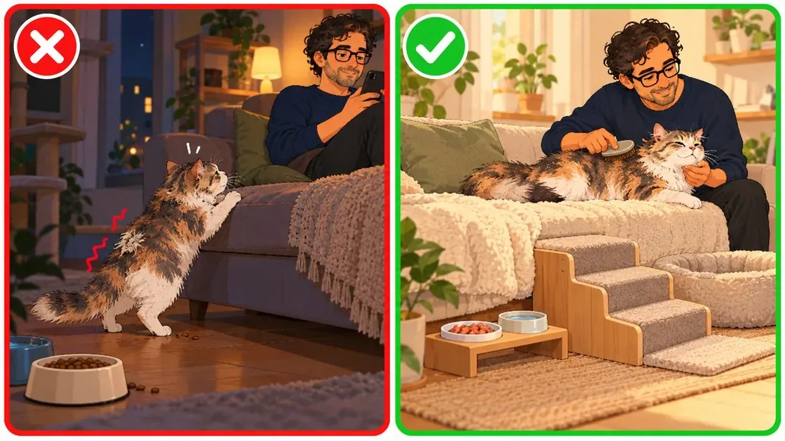
Warnzeichen: Wann es dringend zum Tierarzt geht
Schieb nicht alle Auffälligkeiten aufs Alter. Manche Zeichen deuten auf eine Krankheit hin:
- trinkt viel und pinkelt oft — mögliche Nierenprobleme, Diabetes oder Schilddrüsenstörungen;
- versteckt sich und frisst nicht — die Katze hat Schmerzen, Übelkeit oder eine Entzündung;
- macht neuerdings neben das Katzenklo — oft hängt das mit Gelenkschmerzen (der Rand ist schwer zu überwinden), häufigem Wasserlassen (das Klo ist schnell schmutzig) zusammen oder damit, dass die Katze einfach vergessen hat, wo die Toilette ist.
Ein besonderes Problem ist die Katzendemenz (kognitives Dysfunktionssyndrom). Sie ähnelt der Alzheimer-Krankheit beim Menschen. Ihre wichtigsten Anzeichen kann man sich mit den Buchstaben VISHDAAL merken:
- V (Vokalisation) — grundloses Schreien, besonders nachts;
- I (Interaktion) — die Katze ist aggressiv geworden oder weicht dir im Gegenteil nicht mehr von der Seite;
- S (Schlaf) — schläft tagsüber und streift nachts unruhig umher;
- H (Unsauberkeit) — macht neben das Klo, manchmal direkt auf ihren Schlafplatz;
- D (Desorientierung) — bleibt in Ecken stecken, irrt ziellos umher, findet ihren Napf nicht;
- A (Aktivität) — spielt weniger und hört auf, ihr Fell zu pflegen;
- A (Angst) — ist schreckhaft geworden, hat Angst, allein zu bleiben;
- L (Lernen und Gedächtnis) — vergisst ihren Namen oder die gewohnten Hausregeln: reagiert zum Beispiel nicht mehr auf ihren Namen, obwohl sie alles andere hört.
Bevor „Demenz“ diagnostiziert wird, sollte der Tierarzt prüfen, ob die Katze Bluthochdruck oder Schmerzen hat.
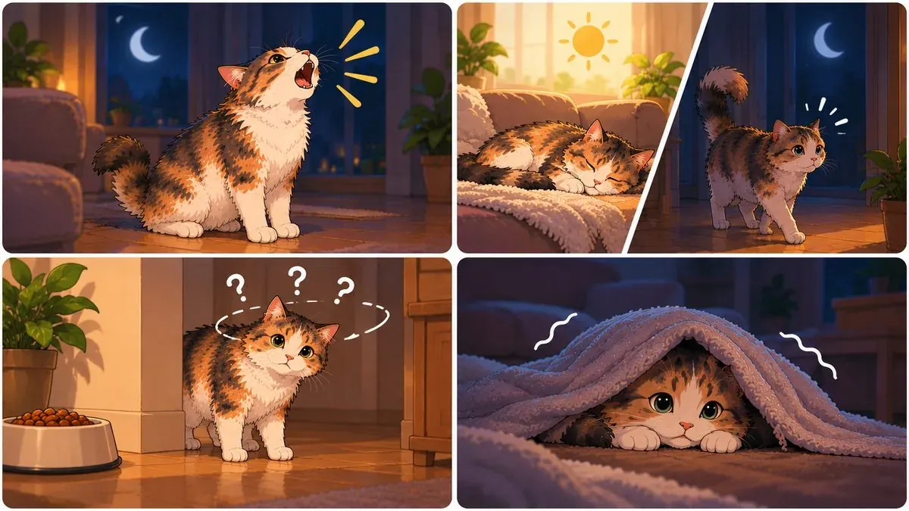
So machst du dein Zuhause bequem für eine ältere Katze
- Stell die Näpfe etwas höher, damit die Katze den Hals nicht stark beugen muss.
- Verteile Wassernäpfe in der ganzen Wohnung, damit die Katze mehr trinkt.
- Kauf ein großes Katzenklo mit niedrigem Einstieg, in das sie leicht hineinkommt.
- Stell Treppchen oder Hocker neben Sofas und Fensterbänke, damit die Katze nicht springen muss.
- Richte warme, zugfreie Liegeplätze in verschiedenen Teilen der Wohnung ein.
- Wenn sich die Katze schlecht zurechtfindet, lass nachts ein Nachtlicht an und stell die Möbel nicht um.
- Wenn andere Tiere mit einem aktiveren Lebensrhythmus im Haushalt leben, gib der älteren Katze eigene Zeit und einen eigenen Platz, an dem sie in Ruhe allein sein kann. Dauerstress führt zu gesundheitlichen Problemen.
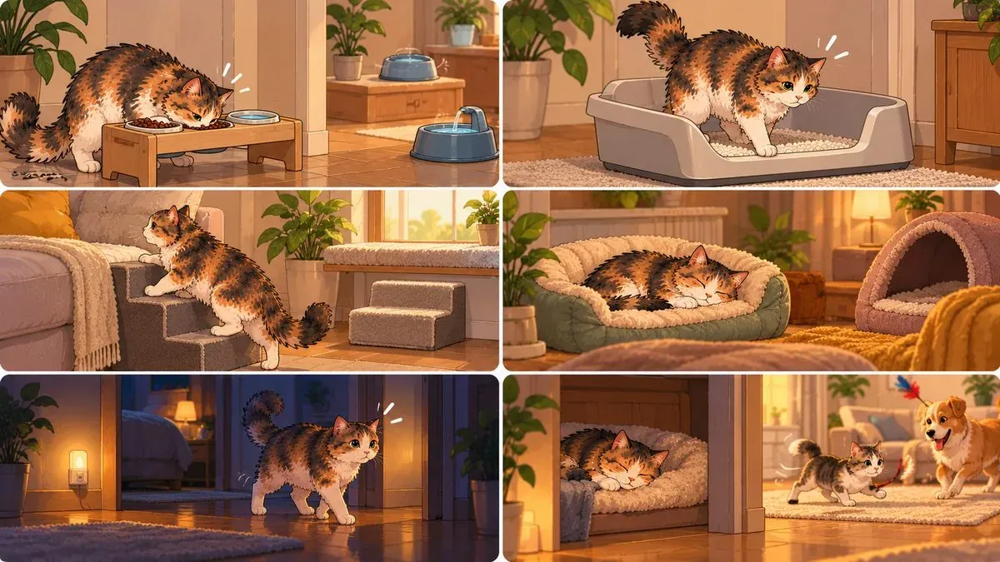
Pflege und Ernährung
Schneide unbedingt die Krallen (im Alter werden sie brüchig und können einwachsen) und bürste das Fell regelmäßig. Achte auf den Kot: Ältere Katzen leiden oft an Verstopfung, weil sie zu wenig trinken. Besprich am besten vorab mit deinem Tierarzt, was in solchen Fällen zu tun ist.
Behalte das Gewicht der Katze im Blick — es ist der wichtigste Gesundheitsindikator. Stell nicht ohne Rat des Tierarztes auf „Senior“-Futter um. Gesunde ältere Katzen brauchen mehr Eiweiß, bei nierenkranken Katzen dagegen müssen Eiweiß und Phosphor streng begrenzt werden.
Stell die Katze alle sechs Monate beim Tierarzt vor: Der Blutdruck sollte gemessen und Blut und Urin untersucht werden. Wenn die Gelenke schmerzen, kann der Tierarzt moderne Injektionen verschreiben (zum Beispiel Präparate mit Frunevetmab wie Solensia), die Schmerzen gut lindern und für Nieren und Leber unbedenklich sind.
Das Wichtigste ist, vorbereitet zu sein und rechtzeitig auf Veränderungen zu reagieren. Denk daran: Katzen haben keine so großen „Reserven“, dass sie Probleme lange ohne ernste Folgen aushalten — besonders im Alter.
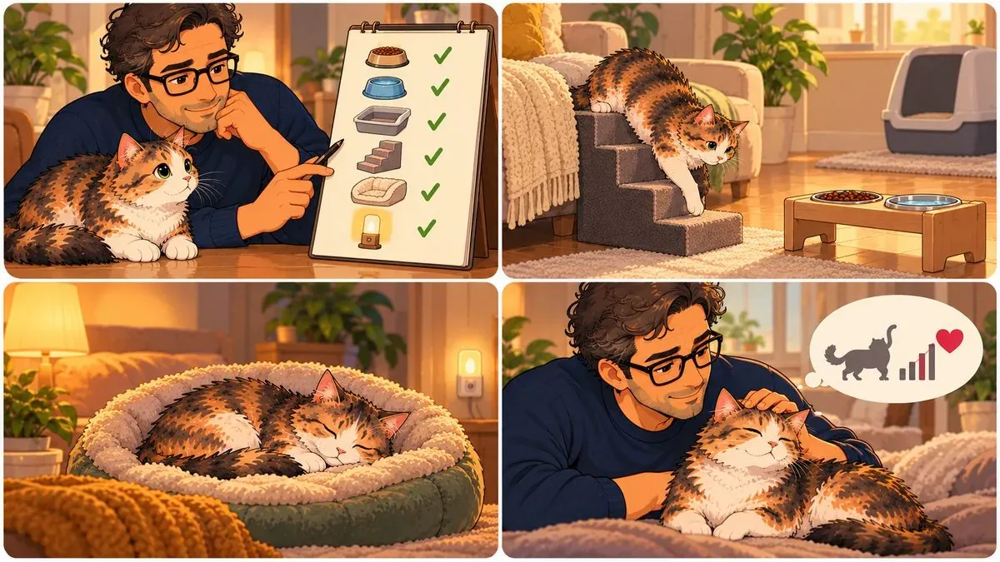
13. Wenn du deine Katze nicht behalten kannst
Manchmal muss eine Katze abgegeben werden: wegen einer Allergie, eines Umzugs, Geldmangels, eines Babys oder weil das Tier aggressiv ist. Doch bevor du neue Halter suchst, solltest du klären: Lässt sich das Problem wirklich nicht lösen?
Lässt sich das Verhalten ändern?
Am häufigsten werden Katzen abgegeben, weil sie neben das Katzenklo pinkeln. Viele glauben, die Katze räche sich, doch in etwa der Hälfte der Fälle ist sie einfach krank: Nierensteine, Blasenentzündung oder Gelenkschmerzen.
So unterscheidest du eine Krankheit von einem Verhaltensproblem:
Wie die Katze pinkelt
- Krankheit (Blasenentzündung, Schmerzen, Steine): kleine Pfützen, unter Anstrengung.
- Markieren: im Stehen, mit erhobenem Schwanz, spritzt an die Wand.
- Mag das Klo nicht: normale große Pfützen, nur nicht im Klo.
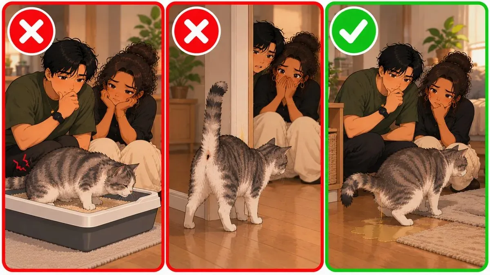
Wo die Katze pinkelt
- Krankheit: überall, besonders auf Kühlem (Badewanne) oder Weichem (Bett).
- Markieren: an Wände, Türen, Vorhänge.
- Mag das Klo nicht: auf Teppiche, Möbel, in versteckte Ecken weit weg vom Klo.
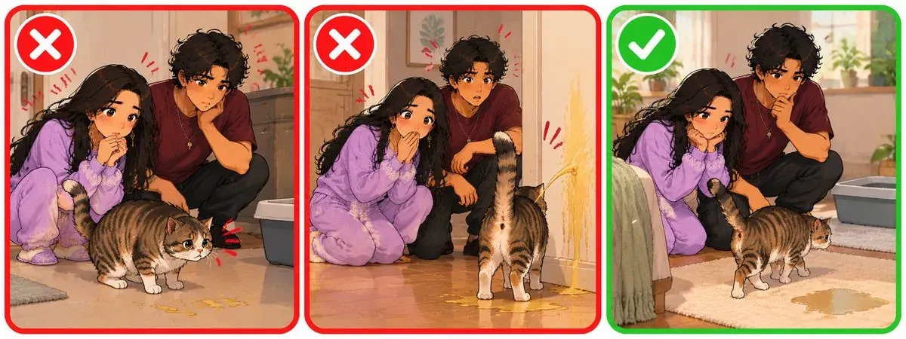
Verhältnis zum Katzenklo
- Krankheit: benutzt es manchmal, verbindet das Klo aber mit Schmerzen.
- Markieren: macht das große Geschäft ins Klo, pinkelt aber drinnen und draußen.
- Mag das Klo nicht: meidet es ganz oder verscharrt nicht.
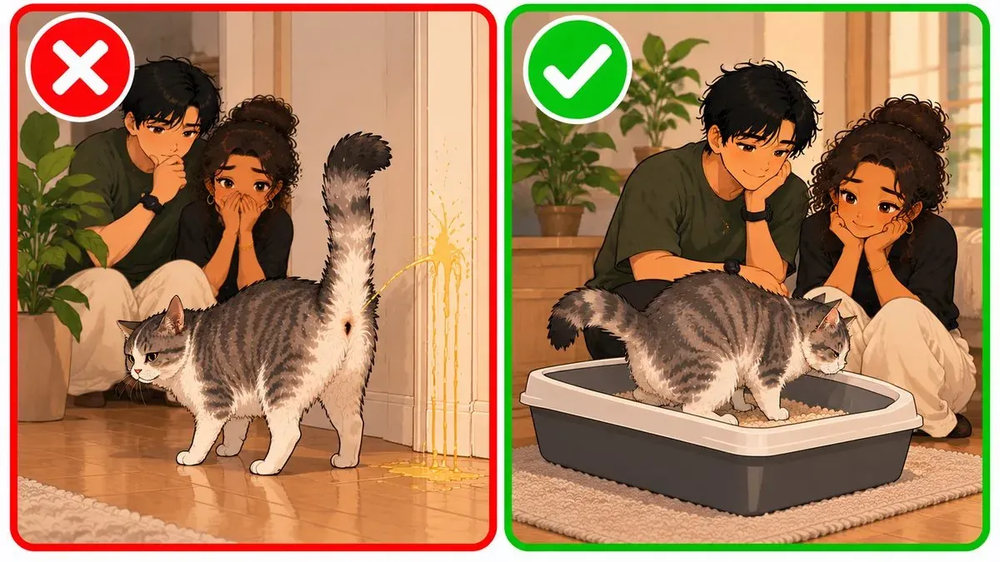
Verhaltensprobleme (Markieren, Stress) lassen sich oft selbst lösen: mehr Katzenklos aufstellen, die Futterplätze trennen oder vom Tierarzt verschriebene Beruhigungsmittel einsetzen. In anderen Fällen hilft ein Tierverhaltensberater oder ein Tierarzt.
So findest du richtig ein neues Zuhause
Wenn die Abgabe unvermeidlich ist, stelle ehrliche Informationen zusammen: Alter, Kastration, Impfungen, Krankheiten (vor allem FeLV oder FIV) und Charakter.
Mach gute Fotos und schreib eine wahrheitsgemäße Anzeige. Wenn du verschweigst, dass die Katze unsauber ist, wird sie womöglich ausgesetzt oder dir zurückgegeben — ein enormer Stress für das Tier. Ehrlichkeit ist wichtig.
Warnzeichen bei der Wahl neuer Halter:
- will keine Netze an den Fenstern anbringen (die Katze kann hinausfallen);
- will die Katze vorher nicht kennenlernen;
- lehnt einen Vertrag ab;
- will die Katze in der Stadt nach draußen lassen;
- versteht nicht, dass gutes Futter und Tierarzt Geld kosten;
- nimmt das Tier als Geschenk für einen Freund, ein Kind oder einen Kollegen;
- ist nicht bereit, über die vereinbarte Zeit Fotos zu schicken.
Vertrag und Übergabe
In Europa (und vielen anderen Ländern) ist ein Schutzvertrag üblich. Damit er gültig ist und die Katze nicht wie eine „Sache“ weiterverkauft wird, sollte darin stehen, dass das Eigentum bei dir bleibt oder dass die Katze nicht an Dritte weitergegeben werden darf.
Üblich ist auch eine kleine Schutzgebühr. Kostenlose Katzen landen oft bei verantwortungslosen Menschen, Wiederverkäufern oder Tierquälern. Damit die Katze nicht bei einem Tierquäler landet, überprüfe die Person vorher über örtliche Tierschutzvereine und Ehrenamtliche.
Gib der Katze ihr Klo, das gewohnte Futter, die Streu und ihren Lieblingsplatz mit ins neue Zuhause, damit ein vertrauter Geruch bleibt.
Notfall
Manchmal muss es schnell gehen: Der Vermieter verlangt, dass das Tier wegkommt, oder du hast draußen eine Katze gefunden und kannst sie nicht mit nach Hause nehmen.
Die wichtigste Regel: Setz eine Hauskatze nie draußen aus — dort überlebt sie nicht, vor allem nicht verletzt oder versehrt. Ehrenamtliche haben eine Regel: Wer das Tier findet, trägt die Verantwortung. Manchmal muss man sofort und ohne Zögern handeln.
Aktionsplan für einen Notfall, auch mit einer Katze von der Straße:
- die ersten 24 Stunden — bring die Katze an einen vorübergehenden sicheren Ort: ins Bad, auf einen verglasten Balkon (wenn es dort warm ist und ein Mensch sich dort in normaler Hauskleidung aufhalten kann), in eine bezahlte Pflegestelle oder zu Freunden;
- 1–3 Tage — wenn du die Katze draußen gefunden hast, bring sie in eine Tierarztpraxis und lass prüfen, ob sie gechippt ist: Vielleicht sucht sie jemand;
- die folgenden Wochen — such nach den bisherigen oder nach neuen Haltern.
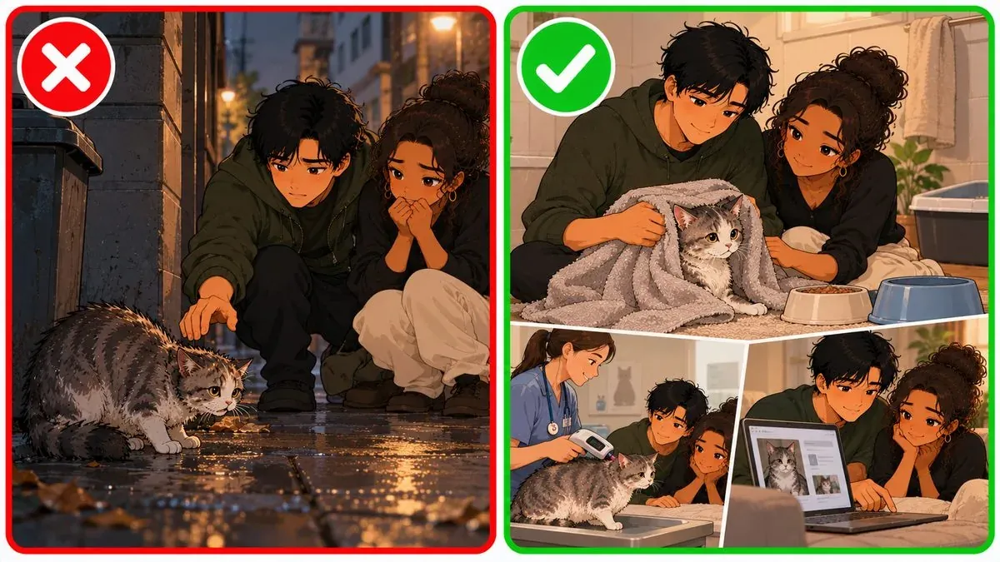
Was tun, wenn der Vermieter Tiere verbietet
Wenn du zur Miete wohnst (besonders in europäischen Ländern wie Deutschland), kenne deine Rechte. Gerichte entscheiden oft zugunsten der Tierhalter: In Deutschland zum Beispiel ist ein generelles Verbot von Hunden und Katzen im Standardmietvertrag unwirksam.
Der Vermieter kann eine Katze nicht „einfach so“ verbieten — er braucht einen triftigen Grund (zum Beispiel eine schwere Allergie bei Nachbarn). So einigst du dich mit dem Vermieter:
- schließ eine Haftpflichtversicherung ab, die Schäden abdeckt, falls die Katze etwas kaputt macht;
- biete eine zusätzliche Kaution an;
- versprich, dass die Katze nicht im Treppenhaus herumläuft und die Nachbarn nicht stört.
Manchmal reicht es, dem Vermieter die Situation zu schildern und ein Foto oder Video des Tieres zu zeigen. Wir sind alle Menschen, und die meisten empfinden Mitgefühl, wenn sie eine Katze in Not sehen. Trau dich zu fragen und es zu versuchen — es geht um das Leben eines Tieres.
14. Katzenallergie: Was tun?
Nicht das Fell löst die Allergie aus. Das Hauptallergen ist das Eiweiß Fel d 1, das im Speichel und im Hautfett der Katze vorkommt. Wenn sich die Katze putzt, verteilt sie den Speichel im Fell. Der Speichel trocknet, und winzige Eiweißpartikel verbreiten sich in der ganzen Wohnung und setzen sich auf Möbeln und Vorhängen ab.
Die Symptome sind unterschiedlich: Niesen, tränende Augen, Juckreiz oder Husten. Genau dieselben Symptome lösen aber auch Pollen oder Hausstaubmilben aus, deshalb lohnt sich zuerst ein Test beim Allergologen.
Wenn du die Katze behalten möchtest
- Spezialfutter. Es gibt inzwischen Futter und Ergänzungen mit Antikörpern gegen das Allergen (sie werden aus Eigelb gewonnen — Hersteller mit nachgewiesener Wirkung findest du schnell über eine Suche). Die Antikörper neutralisieren das Allergen direkt im Maul der Katze, während sie frisst. Schon nach drei Wochen ist etwa halb so viel Allergen im Fell.
- Luftreinigung. Kauf einen Luftreiniger mit HEPA-Filter — er fängt schwebende Allergenpartikel gut ab.
- Putzen. Lass die Katze nicht ins Schlafzimmer, entferne Teppiche und wische regelmäßig feucht.
Was nicht hilft
- „Hypoallergene“ Katzen oder Katzen ohne Allergen gibt es nicht — selbst haarlose Sphynx-Katzen geben es über die Haut ab.
- Die Katze zu scheren oder täglich zu baden ist sinnlos: Das schädigt nur ihre Haut, und das Allergen wird nicht weniger.
Wenn du Asthma, starke Atemnot oder Schwellungen bekommen hast, riskiere nicht deine Gesundheit. Frag einen Arzt nach modernen Behandlungsmöglichkeiten — heute gibt es viele Wege, mit einer Katzenallergie umzugehen, und viele Menschen nutzen sie.
Wichtig: Diese Informationen dienen der Aufklärung und ersetzen keine fachliche Beratung. Für Diagnose und Behandlung (einschließlich Medikamenten für Gelenke, Nieren oder Verhalten) sowie zur Einschätzung, wie schwer eine Allergie ist, wende dich unbedingt an einen Tierarzt oder einen Allergologen.
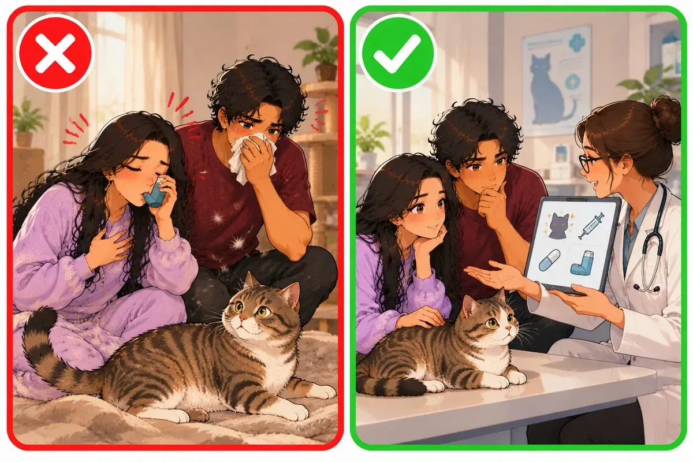
15. Kinder und Katzen: Verhaltensregeln
Das Leben mit einer Katze bringt einem Kind viel Freude und Nutzen: Kinder lernen Fürsorge, Mitgefühl und Verantwortung. Aber Katzen sind sehr sensibel. Lärm, plötzliche Bewegungen und die Unberechenbarkeit kleiner Kinder können sie stark erschrecken, und das endet manchmal mit Kratzern oder Bissen.
Damit Katze und Kind Freunde werden, darf man nichts dem Zufall überlassen. Eltern sollten das Zuhause vorbereiten, klare Regeln aufstellen, ein Vorbild sein und lernen, die Katzensprache zu verstehen.
Warum eine Katze kein Spielzeug ist
Das Wichtigste, was man einem Kind von klein auf erklären sollte: Eine Katze ist ein Lebewesen, sie kann Schmerz und Angst empfinden und hat eigene Wünsche.
Kleine Kinder (besonders unter fünf Jahren) können ihre Kraft noch nicht einschätzen und behandeln ein Tier vielleicht wie ein Kuscheltier: Sie ziehen am Schwanz oder an den Ohren, ohne zu verstehen, dass es wehtut.
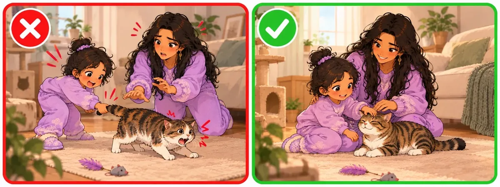
Warum es wichtig ist, das rechtzeitig zu stoppen:
- Stress für die Katze. Wird eine Katze ständig geknuddelt und hat kein Versteck, lebt sie im Dauerstress. Dadurch kann sie krank werden, das Futter verweigern, sich Fell ausreißen oder neben das Katzenklo machen.
- Verletzungsgefahr. Anders als Hunde können Katzen nicht einfach stillhalten und gehorchen. Eine in die Enge getriebene Katze versucht zu fliehen, und wenn sie nicht wegkann, verteidigt sie sich mit Krallen und Zähnen.
- Erziehung zur Güte. Erlauben Eltern dem Kind, ein Tier zu quälen, lernt es kein Mitgefühl. Sei ein gutes Vorbild: Streichelt die Katze gemeinsam, lest liebevolle Bücher über Tiere und sprecht darüber, was das Tier gerade fühlt. So versteht das Kind, dass eine Katze ein Lebewesen mit eigenen, komplexen Gefühlen ist.
Vorbereitung auf Veränderungen in der Familie
Alles hängt davon ab, ob ihr ein Baby erwartet, während die Katze schon bei euch lebt, oder ob ihr eine neue Katze in einen Haushalt mit Kindern holt. Beides braucht Vorbereitung.
Wenn ihr ein Baby erwartet
Für eine Katze ist ein Neugeborenes ein enormer Stress: neue Gerüche, Geräusche, umgestellte Möbel. Fang früh mit der Vorbereitung an:
- Spiel Aufnahmen von Babyweinen und -glucksen ab: erst leise, dann lauter, und gib der Katze dabei Leckerlis, damit sie das Geräusch mit etwas Angenehmem verbindet.
- Creme dir vor dem Streicheln die Hände mit Babycreme ein, damit sich die Katze an den Geruch von Babypflege gewöhnt.
- Müssen Katzenklo oder Näpfe wegen des Babybetts umziehen, verschieb sie jeden Tag ein kleines Stück.
- Führ schon vorher den neuen Fütterungs- und Spielplan ein, den du auch nach der Geburt einhalten kannst.
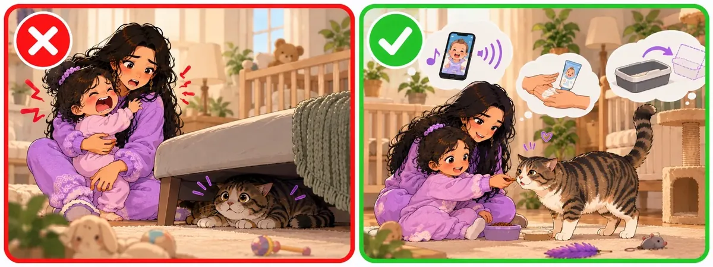
Wenn ihr eine neue Katze aufnehmt (die „3-3-3“-Regel)
Ein neues Tier gewöhnt sich nach der Regel der drei Dreien ein:
- Die ersten 3 Tage. Die Katze hat große Angst: Sie versteckt sich, frisst wenig und will keinen Kontakt. Was tun: Lass sie in einem eigenen Zimmer mit Katzenklo und Futter in Ruhe. Kinder dürfen nicht hinein. Zieh die Katze nicht aus ihrem Versteck.
- Die ersten 3 Wochen. Die Katze gewöhnt sich ein, erkundet die Wohnung und entwickelt Gewohnheiten. Was tun: Ihr könnt mit dem Kennenlernen beginnen. Die Kinder sitzen auf dem Boden, und die Katze kommt von selbst und beschnuppert sie. Gespielt wird mit einer Spielangel.
- Die ersten 3 Monate. Die Katze fühlt sich zu Hause, ist entspannt und sucht selbst Zuwendung. Was tun: Jetzt ist voller Kontakt möglich. Unter Aufsicht können Kinder anfangen, bei der Pflege zu helfen.
Ein krabbelndes Baby darf die Katze nur kennenlernen, wenn ein Erwachsener direkt daneben sitzt und die Katze satt und ruhig ist. Lass sie das Baby beschnuppern: So lernen Katzen sich kennen.
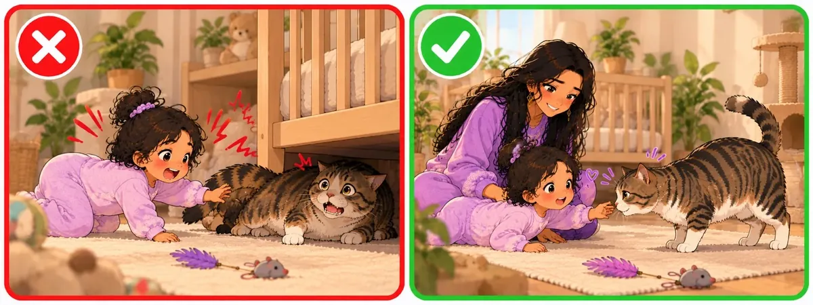
Sichere Zonen für die Katze
Eine Katze muss sich jederzeit zurückziehen und verstecken können. Weiß sie, dass ihr Fluchtweg frei ist, ist sie viel entspannter.
- Erhöhte Plätze. Katzen schauen gern von oben auf die Welt. Stell einen hohen Kratzbaum auf oder bring Wandregale an, die das Kind nicht erreicht.
- Kinderschutzgitter. Bau in die Türrahmen Schutzgitter ein. Die Katze springt darüber oder schlüpft drunter durch, das Baby nicht.
- Toilette und Essplatz. Katzenklo und Näpfe gehören an einen ruhigen Ort, den Kinder überhaupt nicht erreichen. Wird die Katze auf dem Klo oder beim Fressen erschreckt, kann sie krank werden oder anfangen, woanders hinzumachen, zum Beispiel aufs Bett.
Die 5 wichtigsten Regeln im Umgang mit der Katze
Diese Regeln sollten Kinder fest im Kopf haben:
- Beim Fressen und Schlafen nicht anfassen. Schläft, frisst oder trinkt die Katze oder ist sie auf dem Klo, ist sie sozusagen nicht da: nicht anfassen.
- Nicht mit Gewalt festhalten. Will die Katze gehen, lass sie gehen. Nicht hinterherlaufen und nicht gegen ihren Willen auf dem Arm halten.
- Richtig halten. Kleine Kinder dürfen die Katze nicht hochnehmen. Ältere dürfen es, aber nur richtig: Eine Hand stützt die Brust direkt hinter den Vorderbeinen, die andere den Po und die Hinterbeine. Nie am Bauch, an den Ohren, am Schwanz oder am Nackenfell hochheben: Das tut sehr weh.
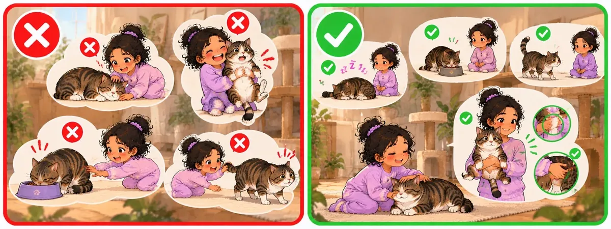
- Der Bauch ist tabu. Der Bauch einer Katze ist sehr empfindlich. Dreht sich die Katze auf den Rücken, ruht sie einfach und will nicht am Bauch gekrault werden. Der Versuch, den Bauch zu streicheln, endet oft mit einem Biss. Am besten streichelt man Kopf, Wangen und hinter den Ohren.
- Nur mit Spielzeug spielen. Hände und Füße sind kein Spielzeug! Wer mit einem Kätzchen mit den Händen spielt, bringt ihm bei, Jagd auf sie zu machen, und als erwachsene Katze beißt sie schmerzhaft. Nimm Spielangeln, Bälle und Laserpointer.
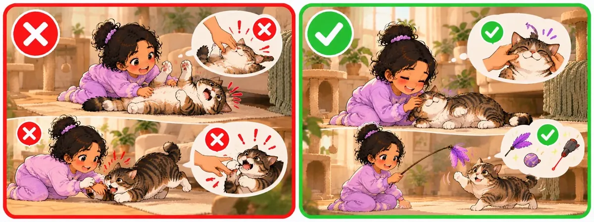
Wie man die Katze um Erlaubnis fragt (die 3-Sekunden-Regel)
Der beste Weg, sich mit einer Katze anzufreunden: ihr die Wahl lassen.
Bring dem Kind bei, der Katze einen Finger hinzuhalten und innezuhalten, ohne sie zu berühren. Kommt die Katze von selbst und reibt ihre Wange am Finger, ist sie mit Kontakt einverstanden. Wendet sie sich ab, wird sie nicht angefasst.
Die 3-Sekunden-Regel: Streichle die Katze drei Sekunden lang und nimm dann die Hand weg.
- Reckt sich die Katze der Hand hinterher und stupst sie mit dem Kopf an, darfst du weiterstreicheln.
- Sitzt sie nur da, putzt sich oder geht weg, reicht es ihr, und der Kontakt sollte enden.
So werden Katzen sehr anhänglich, weil sie sich sicher fühlen.
Woran man merkt, dass die Katze nervös ist: Katzensprache
Katzen greifen selten ohne Vorwarnung an. Eltern sollten Kindern beibringen, Zeichen von Unmut zu erkennen.
Seltsames Verhalten zur Beruhigung: Setzt sich die Katze nach einem wilden Spiel plötzlich hin und putzt sich hastig und nervös oder gähnt, versucht sie, sich nach starkem Stress zu beruhigen. In diesem Moment lässt man sie besser in Ruhe.
Die drei Stimmungsstufen der Katze:
- Grün (Ruhe). Normale Pupillen, die Katze blinzelt langsam. Ohren nach vorn, Körper entspannt, sie schnurrt. Was tun: Streicheln (nach der 3-Sekunden-Regel) und Spielen sind in Ordnung.
- Gelb (Stress und Warnung). Riesige, runde Untertassen-Pupillen. Ohren angelegt oder seitlich gedreht („Flugzeugohren“). Die Haut auf dem Rücken zuckt, der Schwanz schlägt heftig hin und her. Was tun: Sofort Abstand nehmen, die Katze macht sich zur Verteidigung bereit. Nicht beruhigen oder streicheln wollen, einfach in Ruhe lassen.
- Rot (Aggression). Fauchen, Knurren. Buckel, gesträubtes Fell. Die Katze schlägt mit der Pfote oder springt los. Was tun: Die Lage ist gefährlich. Ein Erwachsener muss das Kind wegbringen. Die Katze auf keinen Fall mit den Händen anfassen. Gib ihr ein paar Stunden Ruhe, um sich zu beruhigen.
Wichtig: Manchmal wird einer Katze zu langes Streicheln zu viel, weil die Haut überempfindlich wird. Hört sie beim Streicheln auf zu schnurren, zuckt die Haut auf dem Rücken oder peitscht der Schwanz, nimm sofort die Hand weg, sonst folgt ein Biss.
Bedenke: Schnurren bedeutet nicht immer gute Laune. Katzen schnurren auch bei starkem Stress oder Schmerzen, um sich selbst zu beruhigen. Beurteile immer die ganze Situation und das gesamte Verhalten der Katze.
Hilfe durch Düfte (Pheromone)
Ist es zu Hause laut und die Katze gestresst, können spezielle Steckdosen-Zerstäuber helfen (zum Beispiel Feliway). Sie geben Stoffe ab, die den natürlichen beruhigenden Duftstoffen von Katzen ähneln. Studien zeigen, dass solche Zerstäuber helfen können, dass Katzen weniger nervös sind, seltener Möbel zerkratzen und seltener neben das Katzenklo machen.
Wie Kinder je nach Alter helfen können
Passende Aufgaben helfen einem Kind, verantwortungsvoller zu werden, aber alles muss zum Alter passen. Die Hauptverantwortung für das Tier tragen in jedem Fall die Erwachsenen.
- 0–5 Jahre. Das Kind bewegt sich ruckartig, versteht nicht, dass es wehtut, und steckt Dinge in den Mund. Ständige Aufsicht durch Erwachsene ist nötig. Die Katze wird nicht hochgehoben. Das Kind kann Katzenspielzeug in einen Korb räumen und die Katze mit einem Finger streicheln, während ein Erwachsener seine Hand führt. Nicht ans Katzenklo! Die Katze braucht Plätze, an denen sie sich vor dem Kind verstecken kann.
- 6–12 Jahre. Das Kind kann schon mitfühlen und versteht Regeln. Es kann selbst frisches Wasser geben und Futter hinstellen, der Katze für ein Leckerli einfache Tricks beibringen und mit der Spielangel spielen. Ab etwa 10–12 Jahren kann es das Katzenklo sauber machen, muss sich danach aber gründlich die Hände waschen.
- Ab 13 Jahren. Jugendliche verstehen die Bedürfnisse des Tieres und werden zu echten Partnern. Sie können fast die ganze Pflege übernehmen: Katzenklo reinigen, Futter kaufen, zum Tierarzt gehen (zusammen mit einem Erwachsenen).
Gesundheit: was tun bei Kratzern und Bissen
Auch bei guter Beziehung passieren Verletzungen. Eltern sollten die zwei Hauptgefahren kennen.
Katzenkratzkrankheit
Sie wird durch Bakterien verursacht, die Flöhe übertragen: Flohkot bleibt im Fell und an den Krallen der Katze. Kratzt die Katze ein Kind (oder leckt eine Wunde ab), gelangen die Bakterien ins Blut.
- Symptome. Nach 1–3 Wochen kann an der Kratzstelle ein Pickel entstehen, danach schwellen die Lymphknoten (in den Achseln oder am Hals) stark an. Leichtes Fieber ist möglich.
- Behandlung und Vorbeugung. Die Krankheit heilt oft von selbst, manchmal sind aber Antibiotika nötig, die ein Arzt verschreibt. Schutz bieten der richtige Umgang mit der Katze, regelmäßige Flohbehandlung (auch bei reinen Wohnungskatzen) und gekürzte Krallen. Impfungen nach Plan sind ebenfalls Pflicht: Sie schützen vor anderen gefährlichen Infektionen.
Katzenbisse
Katzenbisse sind viel gefährlicher als Kratzer. Die spitzen, dünnen Zähne wirken wie eine Spritze: Sie bringen Bakterien aus dem Speichel tief unter die Haut, bis zu Gelenken und Sehnen. Oben schließt sich die Wunde schnell, innen beginnt eine heftige Entzündung.
- Symptome. Die Bissstelle wird rot, schwillt stark an und schmerzt schon nach 3–12 Stunden.
- Was tun. Die Bissstelle sofort mindestens 15 Minuten lang unter fließendem Wasser mit Seife auswaschen, um den Speichel auszuspülen.
- Hat der Biss die Haut durchdrungen, geh mit dem Kind unbedingt noch am selben Tag zum Arzt.
Wichtig: Diese Informationen dienen der Aufklärung und ersetzen keine fachliche Beratung. Für medizinische Empfehlungen, Diagnose und Behandlung wende dich unbedingt an einen Tierarzt und bei der Gesundheit des Kindes an einen Arzt.
Mehr in diesem Bereich
Die Informationen in der App stammen aus offenen Quellen und den Erfahrungen von Katzenhaltern. Sie ersetzen keine Beratung und Untersuchung durch einen Tierarzt. Entscheidungen über Gesundheit und Pflege deines Tieres trifft der Halter – wende dich im Zweifel an einen Tierarzt.
All das gibt es in der App Cat First
Artikel, Checklisten und Erste Hilfe auf dem Telefon, auch ohne Internet.